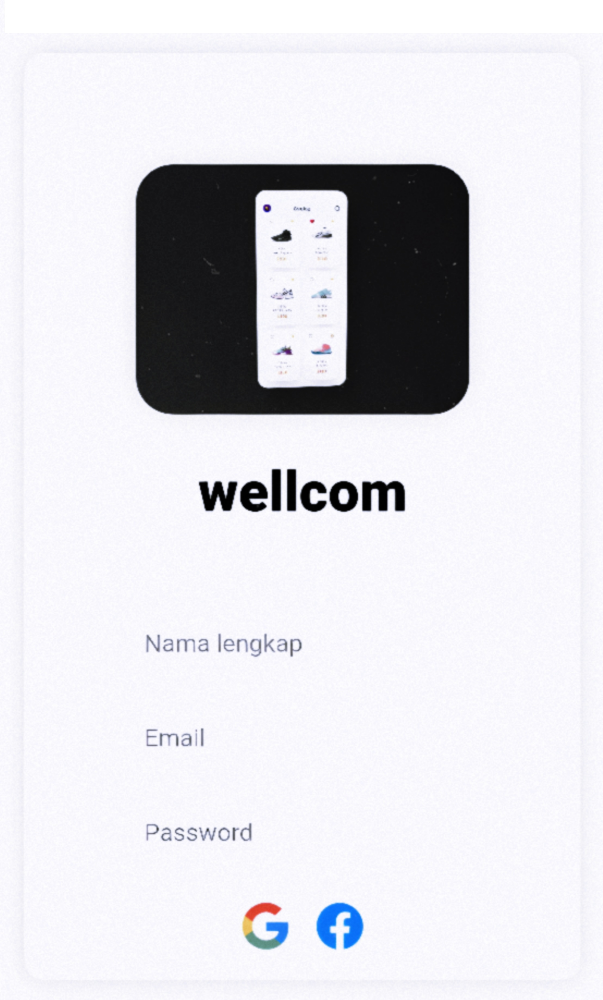
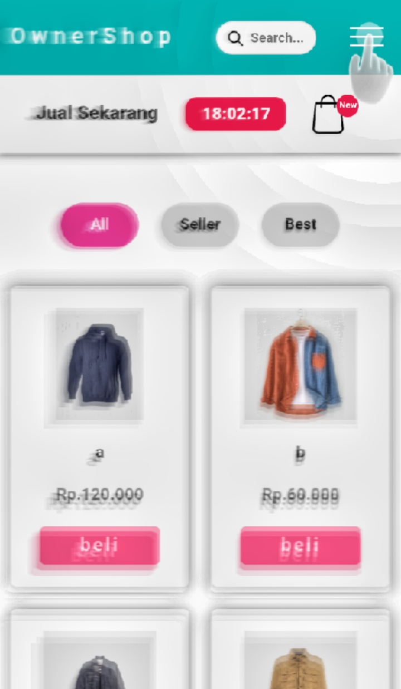
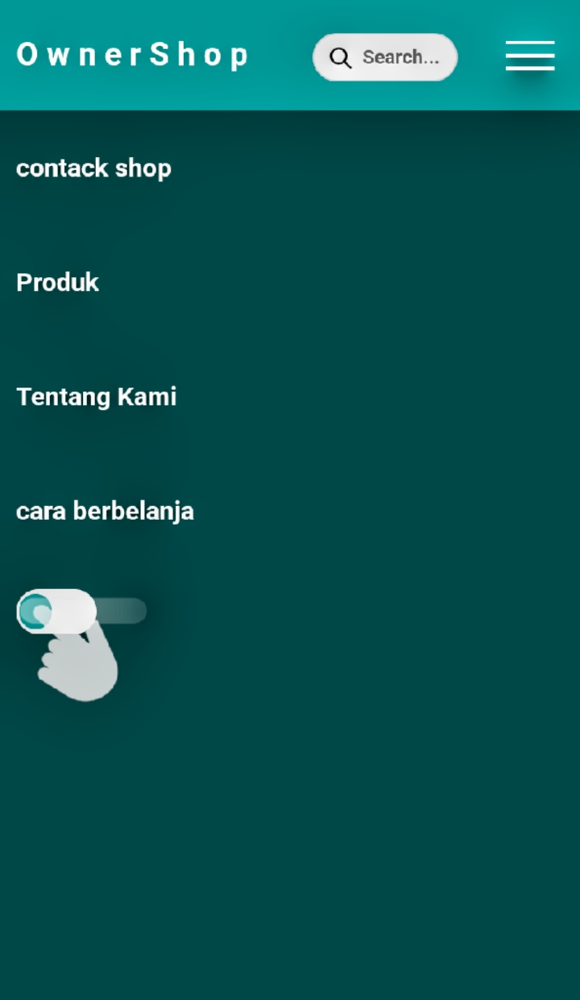
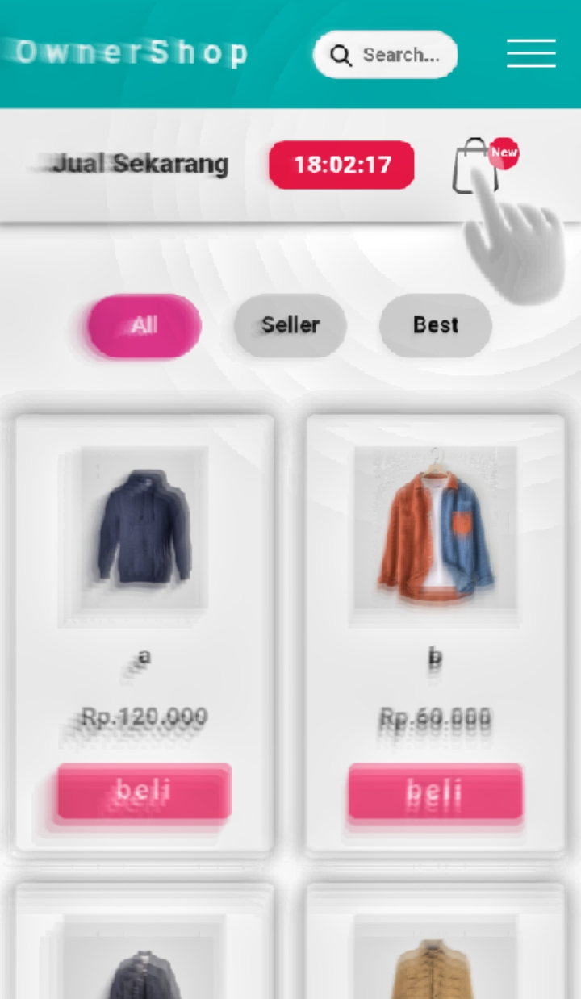
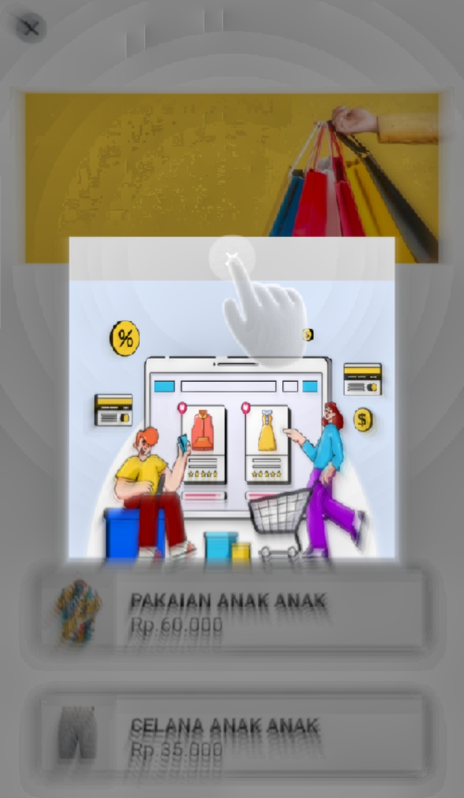
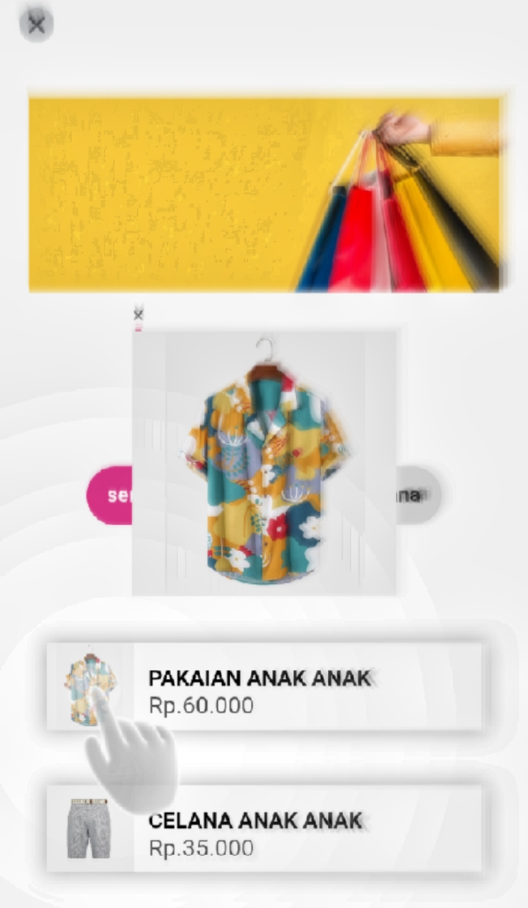

menu login opsi tidak perlu di isi.

jika anda mencari thema untuk body kelick dibagian tanda garis 3.

lalu anda klick "bottom" yang ada di paling bawah

anda ingin melihat keranjang klick tanda yang sudah di arahkan

setelah anda sudah di menu. keranjang klick tanda X

anda ingin melihat gambar lebih jelas di bagian gambar anda bisa klick